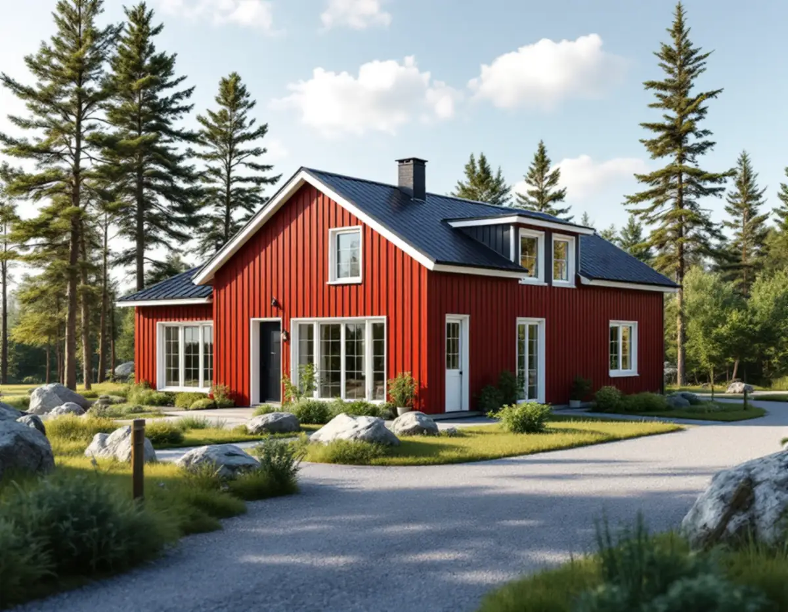
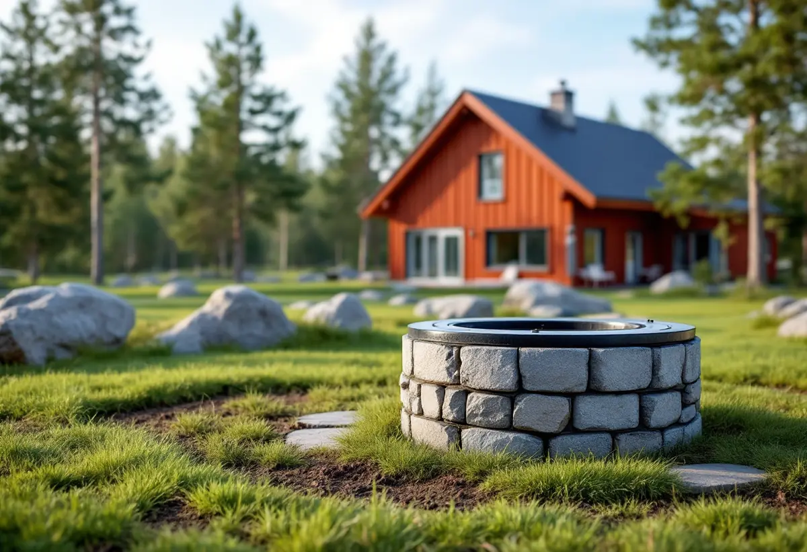

Platsbesök
Vi går över tomten och tittar på terräng, tillfart och var brunn och avlopp kan ligga.
Norrtälje kommun har 19 171 bostäder i småhus enligt SCB:s statistik för 2025. Den som vill bygga ett nytt hus utanför detaljplan, på landet eller i skärgården, börjar ofta med frågan om platsen alls får bebyggas. Geal Entreprenad AB bygger nya hus, tillbyggnader och större ombyggnader som total entreprenad, och i Norrtälje hör förhandsbeskedet och vattnet till de första punkterna.

Ett förhandsbesked är enligt Norrtälje kommun en lokaliseringsprövning av om det går att bygga på fastigheten och om vatten och avlopp går att lösa. Det passar när du vill bygga nytt eller stycka av utanför detaljplanerat område och ännu inte har några ritningar. Det räcker med en skiss eller en beskrivning som visar hur byggnaden ska användas.
Syftet är att få ett bindande beslut innan pengar läggs på projektering och bygglovsritningar. Ett positivt besked betyder däremot inte att något får påbörjas. Bygglov krävs, och för ett enskilt avlopp krävs tillstånd. Ska tomten styckas av skickas förhandsbeskedet till Lantmäteriet tillsammans med ansökan om avstyckning.
I prövningen tittar kommunen bland annat på att vatten och avlopp kan lösas på ett tillfredsställande sätt, att brukningsvärd jordbruksmark inte tas i anspråk, att platsen inte strider mot riksintressen och att den inte är bullerutsatt. Det görs också en bedömning av om det behövs en detaljplan, och om huset måste placeras eller utformas på ett visst sätt ska det framgå av beskedet.

Kommunens karta visar om fastigheten omfattas av en detaljplan. Inom plan prövar bygg- och miljönämnden om åtgärden stämmer med planen och med vissa andra krav i plan- och bygglagen. Utanför plan kan i stället riksintressen för kulturmiljövård, naturvård, friluftsliv eller totalförsvaret påverka prövningen, liksom åkermark och bullernivåer. För Norrtälje stad finns dessutom ett bevarandeprogram i kommunens karta.
En del åtgärder kräver anmälan i stället för lov. Kommunen nämner installation eller ändring av eldstad, rökkanal och ventilation, ändringar i brandskyddet och vissa rivningar. En ombyggnad av ett äldre hus kan alltså kräva anmälan även när inget bygglov behövs.
Den som inte har kommunalt vatten ansvarar själv för att brunnen ger tillräckligt med vatten av godkänd kvalitet. Norrtälje kommun påpekar att större delen av kommunen ligger under den så kallade marina gränsen, alltså mark som efter senaste istiden har täckts av salt eller bräckt vatten. Borras en brunn för djupt nära kusten, eller tas för mycket vatten ur den, kan saltvatten tränga in. På sommaren och i tätbebyggda områden kan det vara extra kritiskt.
För att skydda grundvattnet är det anmälnings- eller tillståndspliktigt att borra för dricksvatten inom utvalda områden, bland annat inom 300 meter från kustlinjen, inom detaljplan och på vissa öar. Kommunens karta visar om din fastighet berörs. Kommunen rekommenderar också att brunnen registreras hos SGU och hänvisar till Livsmedelsverkets råd att analysera vattnet minst vart tredje år.
Vattencentrum, som drivs av Norrtälje Vatten och Avfall, ger opartisk och kostnadsfri rådgivning om enskilt vatten och avlopp. För ett nytt hus är det bra att veta tidigt var brunn och avlopp ska ligga, eftersom placeringen påverkar var huset kan stå. Om att göra om ett fritidshus till åretruntbostad finns mer på en egen sida.
Vid enklare ärenden ges startbeskedet ofta i samma beslut som bygglovet. Vid större byggen krävs ett tekniskt samråd först, bland annat när det behövs en kontrollansvarig. Kommunen avråder från att börja innan lovet har vunnit laga kraft, eftersom det sker på egen risk. En detalj som skiljer sig från tätorten: utanför detaljplan krävs inte marklov, så de markåtgärder som redovisats för nybygget får påbörjas före det tekniska samrådet och startbeskedet. Inom detaljplan kan kommunen ge ett separat startbesked för markarbetet.
Huset ska stakas ut om det framgår av bygglovet. Har det varit tekniskt samråd hålls vanligtvis ett slutsamråd där kontrollplanen, villkoren och den kontrollansvariges utlåtande gås igenom. Huset får inte användas förrän slutbesked finns, annars kan nämnden ta ut en byggsanktionsavgift.
Före inflyttningen ska ett enskilt avlopp anmälas som färdigt med en entreprenörsrapport, och ska huset anslutas till kommunalt vatten och avlopp fylls en servisanmälan i. Norrtälje Vatten och Avfall behöver också veta att huset tas i bruk för att kärl och slamskyltar ska komma ut. Vill du hellre bygga ut det hus du har, läs om tillbyggnad och om hela arbetssättet under byggfirma.
Vi går över tomten och tittar på terräng, tillfart och var brunn och avlopp kan ligga.
Detaljplan, riksintressen och brunnsområden kontrolleras och förhandsbesked söks vid behov.
Mark, grund, stomme och installationer redovisas som egna poster.
Ritningar och kontrollplan tas fram, och tekniskt samråd hålls om det krävs.
Markarbete, grund, stomme, tak och installationer samordnas av oss.
Slutsamråd, entreprenörsrapport och anmälningar till Norrtälje Vatten och Avfall.
Ett helt nytt hus ger inget rotavdrag. Det gör däremot en tillbyggnad på ett befintligt hus som sitter ihop med ytterväggen till minst 75 procent på någon sida eller har en dörr emellan, liksom markarbeten för att dra in vatten och avlopp till ett hus du redan äger och bor i eller använder som fritidshus.
Avdraget är 30 procent av arbetskostnaden, högst 50 000 kronor per person och år och högst 75 000 kronor tillsammans med rutavdrag. Material och resor räknas inte. Är huset yngre än fem år ger ombyggnad och tillbyggnad inget avdrag. Vi drar avdraget direkt på fakturan.
Terrängen, grundläggningen och hur vatten och avlopp ska lösas betyder mycket, liksom tillfarten för material och maskiner till en tomt på landet eller en ö. Efter ett gratis platsbesök får du ett skriftligt kostnadsförslag.
Total entreprenad för villan.
Byggfirma →Takbyte, takbesiktning och plåtarbeten.
Takläggare i Norrtälje →Roslagen, skärgård och fritidshus.
Takrenovering i Norrtälje →Stugtomter, strandskydd och avlopp.
Attefallshus i Norrtälje →Fritidshus, WC-tillstånd och brunn.
Badrumsrenovering i Norrtälje →Ljust bostadshus och röda uthus.
Fasadmålning i Norrtälje →Bruksvillor, sommarvillor och Roslagens trähus.
Fasadrenovering i Norrtälje →Roslagens hus, bruksorter och bidrag i Norrtälje.
Fönsterbyte i Norrtälje →Gårdar, timmerhus och lösa innerbågar i Roslagen.
Fönsterrenovering i Norrtälje →Plankgolv i gamla gårdar och parstugor.
Golvläggare i Norrtälje →Från slipat eller lackat golv till skurgolv.
Golvslipning i Norrtälje →Gasolspis, vedspis och pentry i gäststugan.
Köksrenovering i Norrtälje →Trähus, fritidshus och kustlägen i Norrtälje.
Målare i Norrtälje →Takskydd, rännor och skorstensplåt i Norrtälje.
Plåtslagare i Norrtälje →Fritidshus, altan och gäststuga.
Snickare i Norrtälje →Kust, snö och Roslagens tak.
Takbyte i Norrtälje →Ny tapet i fritidshus och villor.
Tapetsering i Norrtälje →